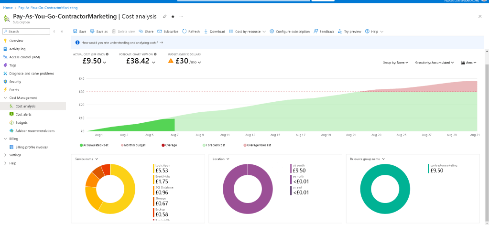
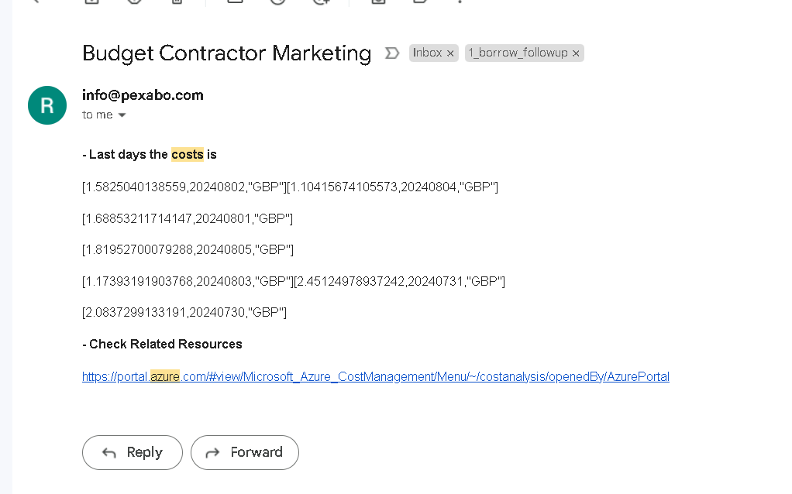
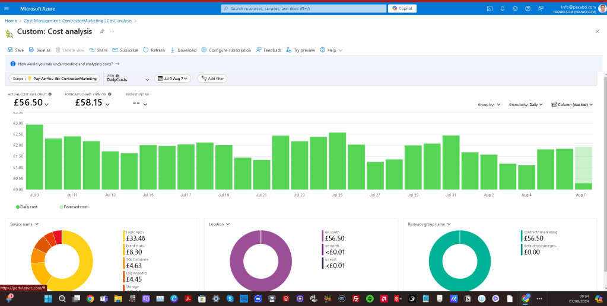
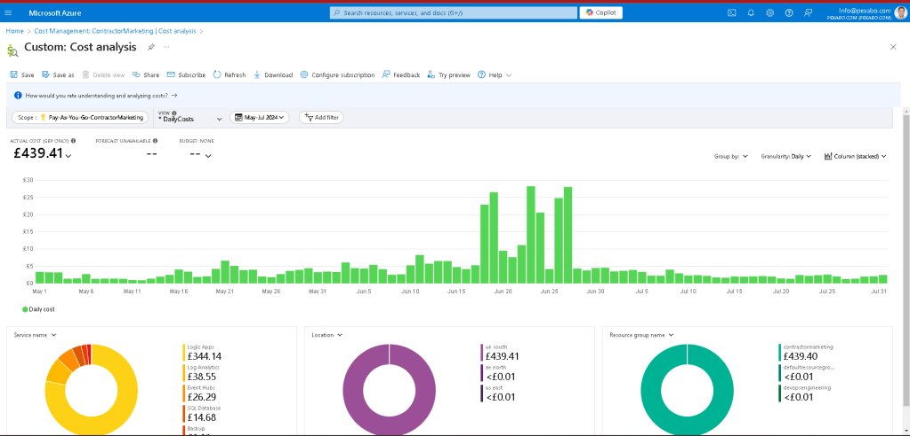

Understanding Serverless Costs on Azure
Top Down Prediction

Daily Alert Email

Check the daily cost with graphics

Check the change

As businesses increasingly migrate to the cloud, serverless computing has become a popular choice due to its scalability and cost efficiency. However, understanding and managing the costs associated with serverless services on platforms like Microsoft Azure can be challenging. In this blog post, we'll explore the cost analysis of serverless computing on Azure, using a sample cost breakdown from an Azure portal.
Overview of Serverless Computing
Serverless computing allows developers to build and run applications without managing servers. Azure manages the infrastructure, scaling, and maintenance, enabling developers to focus on writing code. Popular serverless services on Azure include Azure Functions, Logic Apps, and Event Hubs.
Sample Cost Analysis
Let's dive into a sample cost analysis to understand how serverless costs are accumulated on Azure. The provided cost analysis screenshot reveals various insights.
Key Metrics
-
Actual Cost: £56.50
-
Forecast Cost: £58.15
-
Time Period: July 9 - August 7
-
Granularity: Daily
Cost Breakdown by Service
The pie chart in the analysis provides a breakdown of costs by service:
-
Logic Apps: £33.48
-
Event Hubs: £8.30
-
SQL Database: £4.63
-
Log Analytics: £4.45
-
Storage: £3.64
-
Other: £2.00
Cost Breakdown by Location
The cost distribution across different locations is primarily concentrated in the UK South region, totaling £56.50. Minimal costs are recorded for AE North and US East, both less than £0.01.
Cost Breakdown by Resource Group
The analysis highlights costs by resource group, with "contractormarketing" incurring £56.50, while "defaultresourcegroup" has no associated costs.
Interpreting the Data
Daily Costs
From the bar chart, we can observe daily costs varying between £1.00 to £3.00, with fluctuations indicating different levels of service usage. Peaks on specific dates, such as July 9, July 21, and July 31, suggest higher activity or resource consumption.
Forecast vs. Actual Costs
The slight difference between actual and forecast costs indicates a stable usage pattern. Monitoring these metrics helps in predicting future expenses and optimizing resource allocation.
Service-Specific Insights
-
Logic Apps: The highest contributor to the total cost, Logic Apps, signifies extensive use of workflows and automated tasks. Optimizing workflow efficiency can potentially reduce costs.
-
Event Hubs and SQL Database: These services, while not as costly as Logic Apps, still represent significant expenses. Reviewing data retention policies and optimizing query performance can aid in cost management.
Location and Resource Group Considerations
-
Location-Based Costs: Focusing on cost management in the UK South region, where most expenses are incurred, is crucial. Exploring cost-saving options like regional pricing differences could be beneficial.
-
Resource Group Segmentation: Properly segmenting resources into groups like "contractormarketing" enables better cost tracking and accountability.
Cost Management Strategies
To manage and optimize serverless costs on Azure, consider the following strategies:
-
Monitor and Analyze Usage: Regularly review cost analysis reports to understand spending patterns and identify areas for optimization.
-
Optimize Resource Allocation: Ensure resources are right-sized for their workloads. Avoid over-provisioning and utilize auto-scaling features.
-
Implement Cost Alerts: Set up alerts to notify you when spending exceeds predefined thresholds, helping prevent unexpected charges.
-
Leverage Reserved Instances: For predictable workloads, reserved instances can offer significant cost savings compared to pay-as-you-go pricing.
-
Optimize Code and Workflows: Efficient code and streamlined workflows reduce execution time and resource consumption, leading to lower costs.
Conclusion
Understanding and managing serverless costs on Azure requires a thorough analysis of usage patterns and a strategic approach to resource allocation. By leveraging Azure's cost management tools and implementing best practices, businesses can optimize their serverless computing expenses and maximize their cloud investment.
Serverless computing offers immense benefits, but keeping an eye on costs ensures that these benefits translate into tangible savings and efficient operations. Regularly reviewing cost analysis reports, like the one discussed, empowers organizations to make informed decisions and maintain control over their cloud budget.
References
https://portal.azure.com/#view/Microsoft_Azure_CostManagement/CostAnalysis/scope/%2Fproviders%2FMicrosoft.Billing%2FbillingAccounts%2F3a367191-21a8-57a3-7d6e-74cbd04c1a4f%3A599be2b5-f9c7-473b-8a18-26c0232b4911_2019-05-31/isAcmContext~/true/viewId/%2Fproviders%2FMicrosoft.Billing%2FbillingAccounts%2F3a367191-21a8-57a3-7d6e-74cbd04c1a4f%3A599be2b5-f9c7-473b-8a18-26c0232b4911_2019-05-31%2Fproviders%2FMicrosoft.CostManagement%2Fviews%2Fms%3ADailyCosts/openByNewTab~/true
Imported from rifaterdemsahin.com · 2024